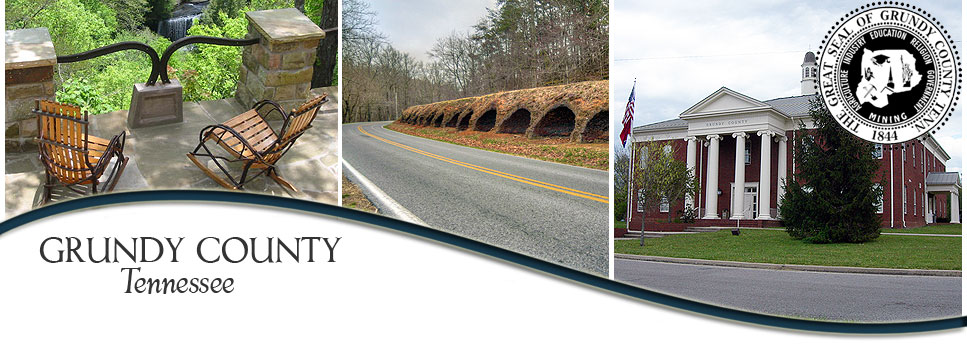

Explore the Past
Grundy is full of history and Museums. Infact most of Grundy is actually a historical district that is preserved and maintained. Here you can find links and inforamtion so some of our favorite historical areas in the county. 
Grundy County
Miners Museum & Heritage Center
2115 Main St, Palmer, TN 37365
(931) 779-5292
Historical Society Heritage Center
465 Railroad Ave, Tracy City, TN 37387
(931) 592-6008
SAM H. WERNER MILITARY MUSEUM
1148 West Main Street Monteagle, TN 37356
931-308-7854
Werner Military Museum Website
Sewanee Memorial Cross
Sewannee Memorial Cross Website
Unnamed Road, Sewanee, TN 37375
All Saints Chapel University of the South
All Saints Chapel Webiste